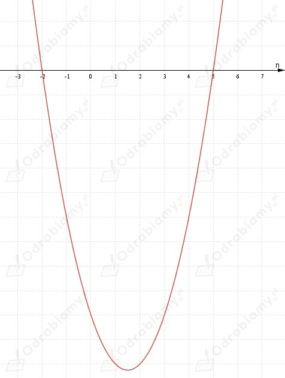
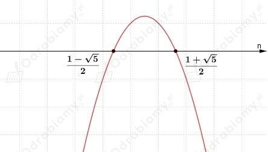
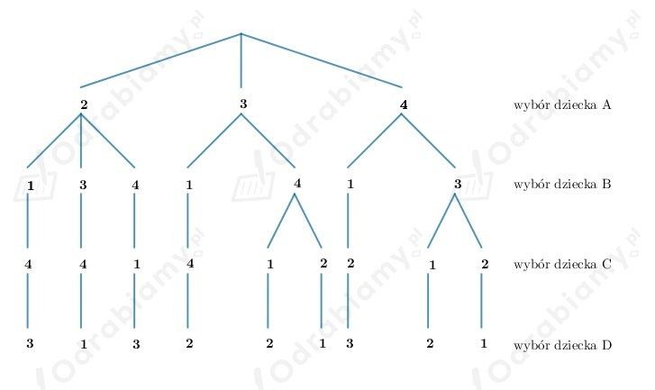

a)
Ustawiamy dziewięć osób w kolejce na 9! sposobów, a więc:
b)
Ustawiamy czworo dziewcząt i pięciu chłopców w kolejce, w taki sposób, aby dziewczęta
stały na początku kolejki.
Wobec tego na pierwszych czterech miejscach stawiamy dziewczęta 4! sposobów, a następnie na
kolejnych 3 miejscach stawiamy chłopców na 5! sposobów.
Wnioskujemy, że możemy podane osoby ustawić na 4!·5! sposobów, a więc:
c)
Ustawiamy troje dziewcząt i sześciu chłopców w kolejce, w taki sposób, aby dziewczęta
stały na końcu kolejki.
Wobec tego sześć pierwszych miejsc zajmują chłopcy i możemy ich ustawić na 6! sposobów, natomiast
trzy ostatnie miejsca zajmują dziewczęta i możemy je ustawić na 3! sposobów.
Wnioskujemy, że możemy podane osoby ustawić na 6!·3! sposobów, a więc:
a)
b)
c)
d)
e)
f)
g)
h)
i)
j)
k)
l)
a)
Na podstawie treści zadania zapisujemy równanie:
Rozwiązujemy powyższe równanie:
Zauważmy, że:
wobec tego:
b)
Na podstawie treści zadania zapisujemy nierówność:
Rozwiązujemy powyższe równanie. Rozpiszmy lewą stronę równania
Zauważmy, że zachodzi
Również zachodzi równanie (wystarczy podzielić obie strony równania przez n!)
Zatem łatwo zauważyć, że
Stąd
a)
Aby równanie było spełnione, to:
czyli:
wobec tego:
b)
c)
Wnioskujemy, że n=5.n=5
d)
Wnioskujemy, że n=8.
e)
Zauważmy, że n=4 jest pierwiastkiem równania, bo:
Zatem dzielimy schematem Hornera wielomian przez dwumian:
| | | | | |
| | | | | |
Dostajemy:
Zatem pierwiastkami wielomianu są liczby:
Wnioskujemy, że n=4.
f)
Wnioskujemy, że n=2.
a)
Rozwiązujemy nierówność:
Rozwiązujemy pomocniczo równanie:
Szkicujemy pomocniczo wykres:

Z wykresu funkcji odczytujemy, że:
Uwzględniając założenia wnioskujemy, że nierówność jest spełniona, gdy: n=3 lub n=4.
Zatem nierówność spełniają tylko dwie liczby naturalne,
co należało uzasadnić.
b)
Rozwiązujemy nierówność:
Rozwiązujemy pomocniczo równanie:
Szkicujemy pomocniczo wykres:

Z wykresu funkcji odczytujemy, że:
Uwzględniając założenia wnioskujemy, że nierówność jest spełniona, gdy: n > 1 i n ∈ N.
Zatem nierówność spełniają wszystkie liczby naturalne większe od 1,
co należało uzasadnić.
Rozwiązujemy równanie:
Wnioskujemy, że dla każdego n spełniona jest powyższa równość.
Zatem równanie jest spełnione przez każdą liczbę naturalną n,
co należało uzasadnić.
Uzasadniamy teraz równość:
Rozpisujemy lewą stronę równania korzystając z uzasadnionej wyżej równości:
Zauważamy, że lewa strona jest równa prawej stronie równania (L=P),
co należało uzasadnić.
Wiemy, że "zera" tworzą się z iloczynu cyfry 2 i cyfry 5. Dwójek zawsze będzie więcej, więc trzeba
sprawdzić ile jest piątek w danej liczbie. Zatem dzielimy liczbę przez 5. Czasem występują tak
zwane piątki "podwójne". Jeżeli wynik dzielenia będzie większy od 5, to dzielimy po raz kolejny
przez 5, dopóki wynik nie będzie mniejszy od 5. Później sumujemy oba wyniki i zaokrąglamy w dół.
a)
Wobec tego:
Wynik jest mniejszy od 5, więc wnioskujemy, że liczba 15! ma na końcu 3 zera.
b)
Wobec tego:
Wynik jest większy od 5, więc dzielimy wynik przez 5 i dostajemy:
Wynik jest mniejszy od 5, więc sumujemy oba rozwiązania:
Wnioskujemy, że liczba 30! ma na końcu 7 zer.
c)
Wobec tego:
Wynik jest większy od 5, więc dzielimy wynik przez 5 i dostajemy:
Wynik jest mniejszy od 5, więc sumujemy oba rozwiązania:
Wnioskujemy, że liczba 100! ma na końcu 24 zera.
Z treści zadania wiemy, że wszystkich przedszkolaków jest n.
Każde z dzieci wróciło do domu z nie swojej czapce.
Należy sprawdzić, na ile sposobów jest to możliwe przy podanym założeniu.
a)
Gdy n=3.
Niech czapki będą oznaczone cyframi 1, 2, 3.
Przyjmujemy, że czapka z numerem 1 jest dziecka A, czapka numer 2 jest dziecka B, czapka
z numerem 3 jest dziecka C.
Dziecko A może zabrać czapkę 2 lub 3 czyli może wybrać czapkę na 2 sposoby.
W każdej z sytuacji dziecko B i dziecko C może zabrać czapkę na 1 sposób.
Wobec tego mamy 2 możliwe sytuacje zabrania czapki.
b)
Gdy n=4.
Niech czapki będą oznaczone cyframi 1, 2, 3, 4.
Przyjmujemy, że czapka z numerem 1 jest dziecka A, czapka numer 2 jest dziecka B, czapka
z numerem 3 jest dziecka C, czapka numer 4 jest dziecka D.
Naszkicujmy drzewko obrazujące wszystkie możliwości wyboru czapki:

Wobec tego mamy 9 możliwych sytuacji zabrania czapki.
c)
Gdy n=5.
Wszystkie możliwe sytuacje:
Oznaczmy te pięć osób cyframi: 1, 2, 3, 4, 5.
Będziemy budować ciągi liczbowe takie, że odpowiednie wartości ciągu oznaczają kolejne osoby, a numer
pozycji cyfry w ciągu oznacza czapkę, która założyła dana osoba.
1) Sytuacji, w których wszystkie osoby mają swoją czapkę odpowiada ciąg:
więc może zachodzić 1 taka sytuacja.
2) Sytuacji, w których jedna osoba ma swoją czapkę, cztery osoby mają inną czapkę odpowiadają ciągi:
więc może zachodzić 45 takich sytuacji.
3) Sytuacji, w których dwie osoby mają swoją czapkę odpowiadają ciągi:
więc może zachodzić 20 takich sytuacji.
4) Sytuacji, w których trzy osoby mają swoją czapkę, dwie osoby mają inną czapkę:
więc może zachodzić 10 takich sytuacji.
Ilość interesujących nas sytuacji (czyli takich, w których każda z osób ma czapkę innego dziecka) to:
Wobec tego mamy 44 możliwe sytuacje zabrania czapki.